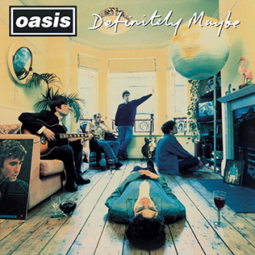

Definitely Maybe (1994)

Release Date: August 29, 1994
Oasis's debut album, "Definitely Maybe," exploded onto the scene, immediately establishing the band as a force to be reckoned with. Raw, energetic, and brimming with youthful swagger, it perfectly encapsulated the zeitgeist of mid-90s Britain. Featuring classic tracks like "Supersonic," "Live Forever," and "Rock 'n' Roll Star," the album was a critical and commercial success, laying the groundwork for their superstardom.
It's often hailed as one of the quintessential Britpop albums, showcasing Noel Gallagher's burgeoning songwriting talent and Liam's powerful, uncompromising vocals. The album's themes of escapism, aspiration, and working-class defiance resonated deeply with a generation.
Track List:
- Rock 'n' Roll Star
- Shakermaker
- Live Forever
- Up in the Sky
- Columbia
- Supersonic
- Bring It on Down
- Cigarettes & Alcohol
- Digsy's Dinner
- Slide Away
- Married with Children